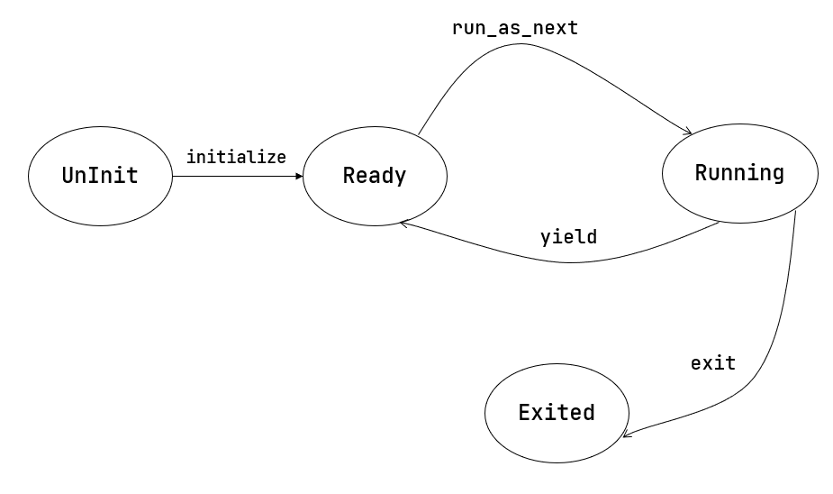

管理多道程序¶
而内核为了管理任务，需要维护任务信息，相关内容包括：
任务运行状态：未初始化、准备执行、正在执行、已退出
任务控制块：维护任务状态和任务上下文
任务相关系统调用：程序主动暂停
sys_yield和主动退出sys_exit
yield 系统调用¶

上图描述了一种多道程序执行的典型情况。其中横轴为时间线，纵轴为正在执行的实体。
开始时，蓝色应用向外设提交了一个请求，外设随即开始工作，
但是它要一段时间后才能返回结果。蓝色应用于是调用 sys_yield 交出 CPU 使用权，
内核让绿色应用继续执行。一段时间后 CPU 切换回蓝色应用，发现外设仍未返回结果，
于是再次 sys_yield 。直到第二次切换回蓝色应用，外设才处理完请求，于是蓝色应用终于可以向下执行了。
我们还会遇到很多其他需要等待其完成才能继续向下执行的事件，调用 sys_yield 可以避免等待过程造成的资源浪费。
/// 功能：应用主动交出 CPU 所有权并切换到其他应用。
/// 返回值：总是返回 0。
/// syscall ID：124
fn sys_yield() -> isize;
用户库对应的实现和封装：
// user/src/syscall.rs
pub fn sys_yield() -> isize {
syscall(SYSCALL_YIELD, [0, 0, 0])
}
// user/src/lib.rs
// yield 是 Rust 的关键字
pub fn yield_() -> isize { sys_yield() }
下文介绍内核应如何实现该系统调用。
任务控制块与任务运行状态¶
任务运行状态暂包括如下几种：
1// os/src/task/task.rs
2
3#[derive(Copy, Clone, PartialEq)]
4pub enum TaskStatus {
5 UnInit, // 未初始化
6 Ready, // 准备运行
7 Running, // 正在运行
8 Exited, // 已退出
9}
任务状态外和任务上下文一并保存在名为 任务控制块 (Task Control Block) 的数据结构中：
1// os/src/task/task.rs
2
3#[derive(Copy, Clone)]
4pub struct TaskControlBlock {
5 pub task_status: TaskStatus,
6 pub task_cx: TaskContext,
7}
任务控制块非常重要。在内核中，它就是应用的管理单位。后面的章节我们还会不断向里面添加更多内容。
任务管理器¶
内核需要一个全局的任务管理器来管理这些任务控制块：
// os/src/task/mod.rs
pub struct TaskManager {
num_app: usize,
inner: UPSafeCell<TaskManagerInner>,
}
struct TaskManagerInner {
tasks: [TaskControlBlock; MAX_APP_NUM],
current_task: usize,
}
这里用到了变量与常量分离的编程风格：字段 num_app 表示应用数目，它在 TaskManager 初始化后将保持不变；
而包裹在 TaskManagerInner 内的任务控制块数组 tasks，以及正在执行的应用编号 current_task 会在执行过程中变化。
初始化 TaskManager 的全局实例 TASK_MANAGER：
1// os/src/task/mod.rs
2
3lazy_static! {
4 pub static ref TASK_MANAGER: TaskManager = {
5 let num_app = get_num_app();
6 let mut tasks = [TaskControlBlock {
7 task_cx: TaskContext::zero_init(),
8 task_status: TaskStatus::UnInit,
9 }; MAX_APP_NUM];
10 for (i, t) in tasks.iter_mut().enumerate().take(num_app) {
11 t.task_cx = TaskContext::goto_restore(init_app_cx(i));
12 t.task_status = TaskStatus::Ready;
13 }
14 TaskManager {
15 num_app,
16 inner: unsafe {
17 UPSafeCell::new(TaskManagerInner {
18 tasks,
19 current_task: 0,
20 })
21 },
22 }
23 };
24}
第 5 行：调用
loader子模块提供的get_num_app接口获取链接到内核的应用总数；第 10~12 行：依次对每个任务控制块进行初始化，将其运行状态设置为
Ready，并在它的内核栈栈顶压入一些初始化 上下文，然后更新它的task_cx。一些细节我们会稍后介绍。从第 14 行开始：创建
TaskManager实例并返回。
注解
关于 Rust 迭代器语法如 iter_mut/(a..b) ，及其方法如 enumerate/map/find/take，请参考 Rust 官方文档。
实现 sys_yield 和 sys_exit¶
sys_yield 的实现用到了 task 子模块提供的 suspend_current_and_run_next 接口，这个接口如字面含义，就是暂停当前的应用并切换到下个应用。
// os/src/syscall/process.rs
use crate::task::suspend_current_and_run_next;
pub fn sys_yield() -> isize {
suspend_current_and_run_next();
0
}
sys_exit 基于 task 子模块提供的 exit_current_and_run_next 接口，它的含义是退出当前的应用并切换到下个应用：
// os/src/syscall/process.rs
use crate::task::exit_current_and_run_next;
pub fn sys_exit(exit_code: i32) -> ! {
println!("[kernel] Application exited with code {}", exit_code);
exit_current_and_run_next();
panic!("Unreachable in sys_exit!");
}
那么 suspend_current_and_run_next 和 exit_current_and_run_next 各是如何实现的呢？
// os/src/task/mod.rs
pub fn suspend_current_and_run_next() {
TASK_MANAGER.mark_current_suspended();
TASK_MANAGER.run_next_task();
}
pub fn exit_current_and_run_next() {
TASK_MANAGER.mark_current_exited();
TASK_MANAGER.run_next_task();
}
它们都是先修改当前应用的运行状态，然后尝试切换到下一个应用。修改运行状态比较简单，实现如下：
1// os/src/task/mod.rs
2
3impl TaskManager {
4 fn mark_current_suspended(&self) {
5 let mut inner = self.inner.exclusive_access();
6 let current = inner.current_task;
7 inner.tasks[current].task_status = TaskStatus::Ready;
8 }
9}
以 mark_current_suspended 为例。首先获得里层 TaskManagerInner 的可变引用，然后修改任务控制块数组 tasks 中当前任务的状态。
再看 run_next_task 的实现：
1// os/src/task/mod.rs
2
3impl TaskManager {
4 fn run_next_task(&self) {
5 if let Some(next) = self.find_next_task() {
6 let mut inner = self.inner.exclusive_access();
7 let current = inner.current_task;
8 inner.tasks[next].task_status = TaskStatus::Running;
9 inner.current_task = next;
10 let current_task_cx_ptr = &mut inner.tasks[current].task_cx as *mut TaskContext;
11 let next_task_cx_ptr = &inner.tasks[next].task_cx as *const TaskContext;
12 drop(inner);
13 // before this, we should drop local variables that must be dropped manually
14 unsafe {
15 __switch(current_task_cx_ptr, next_task_cx_ptr);
16 }
17 // go back to user mode
18 } else {
19 panic!("All applications completed!");
20 }
21 }
22
23 fn find_next_task(&self) -> Option<usize> {
24 let inner = self.inner.exclusive_access();
25 let current = inner.current_task;
26 (current + 1..current + self.num_app + 1)
27 .map(|id| id % self.num_app)
28 .find(|id| inner.tasks[*id].task_status == TaskStatus::Ready)
29 }
30}
run_next_task 会调用 find_next_task 方法尝试寻找一个运行状态为 Ready 的应用并获得其 ID 。
如果找不到， 说明所有应用都执行完了， find_next_task 将返回 None ，内核 panic 退出。
如果能够找到下一个可运行应用，我们就调用 __switch 切换任务。
切换任务之前，我们要手动 drop 掉我们获取到的 TaskManagerInner 可变引用。
因为函数还没有返回， inner 不会自动销毁。我们只有令 TASK_MANAGER 的 inner 字段回到未被借用的状态，下次任务切换时才能再借用。
我们可以总结一下应用的运行状态变化图：
第一次进入用户态¶
我们在第二章中介绍过 CPU 第一次从内核态进入用户态的方法，只需在内核栈上压入构造好的 Trap 上下文，
然后 __restore 即可。本章要在此基础上做一些扩展。
在初始化任务控制块时，我们是这样做的：
// os/src/task/mod.rs
for (i, t) in tasks.iter_mut().enumerate().take(num_app) {
t.task_cx = TaskContext::goto_restore(init_app_cx(i));
t.task_status = TaskStatus::Ready;
}
init_app_cx 在 loader 子模块中定义，它向内核栈压入了一个 Trap 上下文，并返回压入 Trap 上下文后 sp 的值。
这个 Trap 上下文的构造方式与第二章相同。
goto_restore 保存传入的 sp，并将 ra 设置为 __restore 的入口地址，构造任务上下文后返回。这样，任务管理器中各个应用的任务上下文就得到了初始化。
// os/src/task/context.rs
impl TaskContext {
pub fn goto_restore(kstack_ptr: usize) -> Self {
extern "C" { fn __restore(); }
Self {
ra: __restore as usize,
sp: kstack_ptr,
s: [0; 12],
}
}
}
在 rust_main 中我们调用 task::run_first_task 来执行第一个应用：
1// os/src/task/mod.rs
2
3fn run_first_task(&self) -> ! {
4 let mut inner = self.inner.exclusive_access();
5 let task0 = &mut inner.tasks[0];
6 task0.task_status = TaskStatus::Running;
7 let next_task_cx_ptr = &task0.task_cx as *const TaskContext;
8 drop(inner);
9 let mut _unused = TaskContext::zero_init();
10 // before this, we should drop local variables that must be dropped manually
11 unsafe {
12 __switch(&mut _unused as *mut TaskContext, next_task_cx_ptr);
13 }
14 panic!("unreachable in run_first_task!");
15}
我们显式声明了一个 _unused 变量，并将它的地址作为第一个参数传给 __switch ，
声明此变量的意义仅仅是为了避免其他数据被覆盖。
在 __switch 中恢复 sp 后， sp 将指向 init_app_cx 构造的 Trap 上下文，后面就回到第二章的情况了。
此外， __restore 的实现需要做出变化：它 不再需要 在开头 mv sp, a0 了。因为在 __switch 之后，sp 就已经正确指向了我们需要的 Trap 上下文地址。